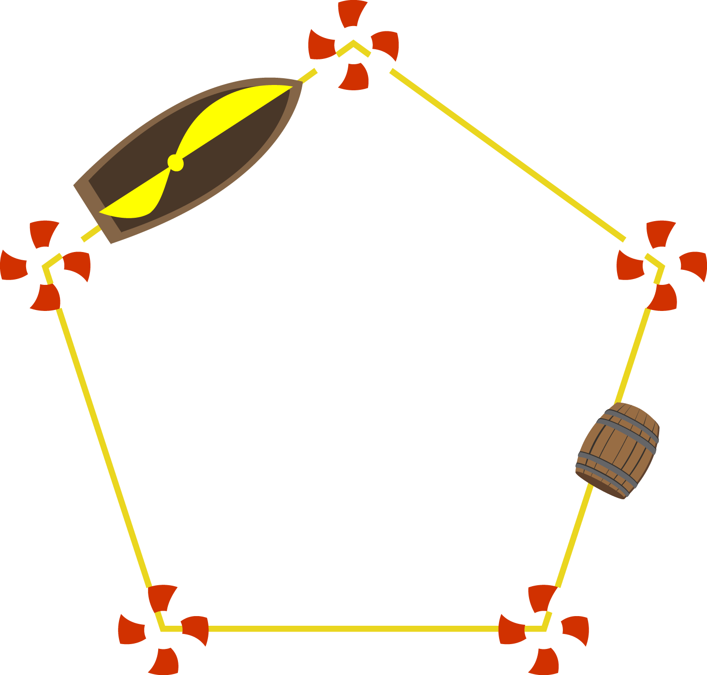
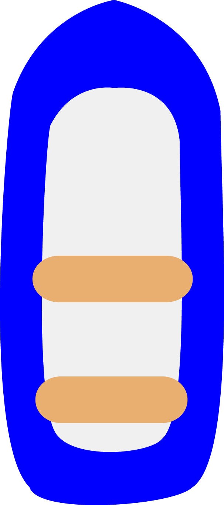
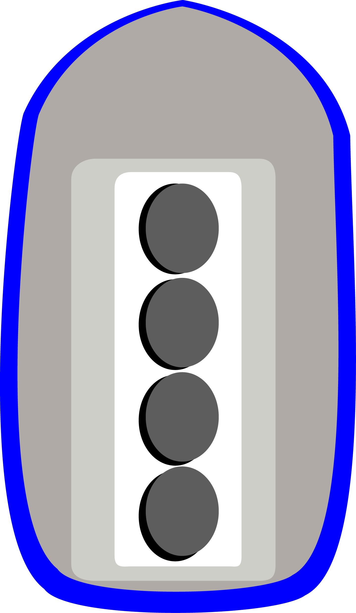
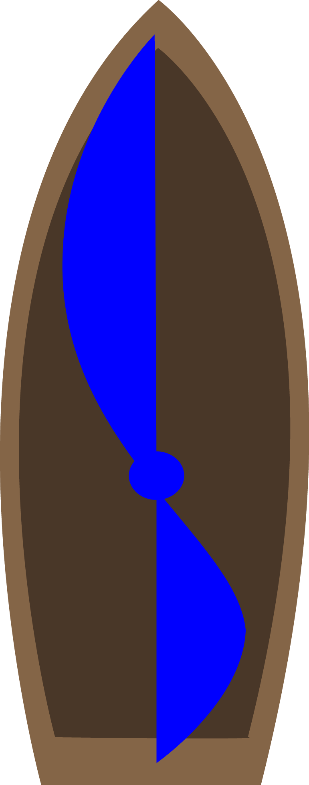

Die Schiffe
Zu Beginn des Spiels besitzt jeder Spieler genau ein Schiff. Aufgabe der Schiffe ist es, die gegnerischen Krakenarme beim Einsammeln der Perlen zu hindern. Dazu sind sie alle mit Kanonen bewaffnet, um auf die Arme zu feuern. Das Feuer wird automatisch eröffnet, sobald sich ein Arm in Reichweite des Schiffes befindet. Trifft eine Kanonenkugel einen Krakenarm, ist dieser für einige Sekunden betäubt, kann sich nicht mehr weiter bewegen und wird ein kleines Stück zurückgestoßen. Schafft es hingegen der Krakenarm das Schiff zu berühren, ohne von ihm getroffen zu werden, so wird das Schiff selbst betäubt und nimmt Schaden.

Daneben haben die Schiffe aber noch eine zweite Aufgabe. Sie können im Wasser treibende Fässer aufsammeln, wenn das Treibgut auf ihrem Kurs liegt. In diesen Fässern können Gegenstände versteckt sein, die dem Spieler Spezialfähigkeiten verleihen, wie zum Beispiel höhere Fahrgeschwindigkeit für seine Schiffe oder die Möglichkeit neue Schiffe in See stechen zu lassen! Aber Achtung, das geht natürlich nur, wenn die Fässer keinen Sprengstoff enthalten, der das Schiff in die Luft jagt..
Schiffe sind mit der Farbe des Spielers markiert, dem sie gehören. Sie werden nicht direkt gesteuert, sondern indem ihnen in der sogenannten "Schiffsphase" ein Kurs beziehungsweise Pfad vorgegeben wird. Jeder dieser Pfade wird an den sechs Eckpunkten von Rettungsringen markiert. Mittels Drag and Drop kann der Spieler die Ringe verschieben und damit den Kurs anpassen. Die Schiffe können jedoch keine allzu spitzen Winkel fahren. Wird ein Kurs beschrieben, der nicht befahren werden kann, wird dies mit einem ausgegrauten „geisterhaften“ Rettungsring angezeigt. Der eigentliche Pfad bleibt auf dem maximal möglichen Winkel eingerastet. Dies alles passiert in der sogenannten „Schiffsphase“, nach welcher der Pfad für alle neugierigen Blick verschwindet. Beginnt die "Krakenphase", dann können die Spieler gegnerische (und die eigenen) Pfade nur noch anhand der Bewegung der Schiffe erahnen. Das erschwert so einiges.
Jedes Schiff hat einen Stabilitätswert, der bestimmt, wie viele Treffer und Explosionen es aushält. Muss ein Schiff zu viel einstecken, wird es zerstört und verschwindet vom Spielfeld. Von dieser Regel gibt es jedoch eine einzige Ausnahme: das Startschiff, also das, mit dem jeder Spieler das Spiel beginnt, kann nicht zerstört werden. Es lohnt sich also auch riskante Manöver zu fahren, denn ein Schiff wird immer übrig bleiben. Wer sich merkt, mit welchem Schiff er das Spiel begonnen hat, kann natürlich diesem Schiff den Hauptanteil an gefährlichen Angriffen überlassen und somit die hart erarbeiteten Bonus-Schiffe schonen. Jedoch kann es sich manchmal auch als schlauer erweisen, eins der verletzlicheren in die Schlacht zu schicken, da es womöglich mehr Schaden beim Gegner anrichtet.

Es gibt drei verschiedene solcher Bonus-Schiffstypen mit jeweils unterschiedlichen Stärken und Schwächen. Sie unterscheiden sich in Angriffskraft, Feuerreichweite, Größe, Geschwindigkeit und Stabilität. Um zu gewinnen, müssen die Schiffe geschickt eingesetzt werden, um ihre Stärken auszuspielen und die gegnerischen Krakenarme aufzuhalten.
Die kleinen, wendigen Boote sind vor allem sehr schnell. Sie eignen sich hervorragend dazu, lange Kurse zu fahren und trotzdem einen Bereich gegen den Kraken abzusichern. Auch Fässer können sie flink einsammeln und mit ihrem hohen Tempo dem Gegner wegschnappen. Was sie an Geschwindigkeit aufbieten können, geht allerdings zu Lasten der Feuerkraft und Stabilität. Sie sind nur schwach bewaffnet, weshalb sie nur langsam und mit wenig Kraft schießen. Die Kanonenkugeln fliegen nicht besonders weit und landen nach kurzer Zeit im Wasser. Ein geschickter Spieler kann ihnen ausweichen und die kleinen Schiffe rammen, wodurch sie schnell zu Bruch gehen. Es empfiehlt sich, mit ihnen lange, schwer zu verfolgende Pfade zu ziehen. Damit kann der Spieler des Krakenarms ihren Weg nur schlecht vorhersagen und ihnen nur schwer aus dem Weg gehen.

Dann gibt es die großen Dampfer. Sie sind das genaue Gegenteil der kleinen Boote, langsam, träge, aber schwer bewaffnet. Gibt man ihnen einen langen Kurs vor, kann es sogar sein, dass sie nicht einmal eine volle Runde fahren können! Dafür können sie in dem Bereich, in dem sie sich aufhalten, ihre hervorragende Bewaffnung einsetzen. Sie schießen viele Kanonenkugeln ab, die weit fliegen und die Krakenarme auf Distanz halten. Am besten sind sie, wenn sie einen kleinen Bereich bewachen, wie zum Beispiel eine einzelne, wertvolle Perle. Der Krakenarm kann sich ihm nur unter größter Anstrengung nähern, wird mit hoher Wahrscheinlichkeit getroffen und muss abdrehen und sich ein anderes Ziel suchen.

Genau dazwischen reihen sich die normalen Standard-Schiffe, wie das mit dem die Spieler beginnen, ein. Es hat in allen Bereichen mittlere Werte und kann für alle Einsatzzwecke benutzt werden. Fässer aufsammeln, Perlen bewachen oder Krakenarme abschießen – Sie sind für alles geeignet. Die anderen Schiffe sind in ihren Kerndisziplinen stärker, dafür kann dieses Schiff aber flexibel genutzt werden, um verschiedene Aufgaben zu erfüllen.
Übrigens: Die Schiffe nehmen ALLE Krakenarme aufs Korn, auch den, der die eigene Farbe hat. Sollte man seinen Krakenarm in der eigenen Ecke haben, empfiehlt es sich, die Schiffe zurückzuziehen, damit man ungestört Perlen einsammeln kann… also zumindest solange die aufmerksamen Nachbarn ihre Schiffe nicht nachziehen…